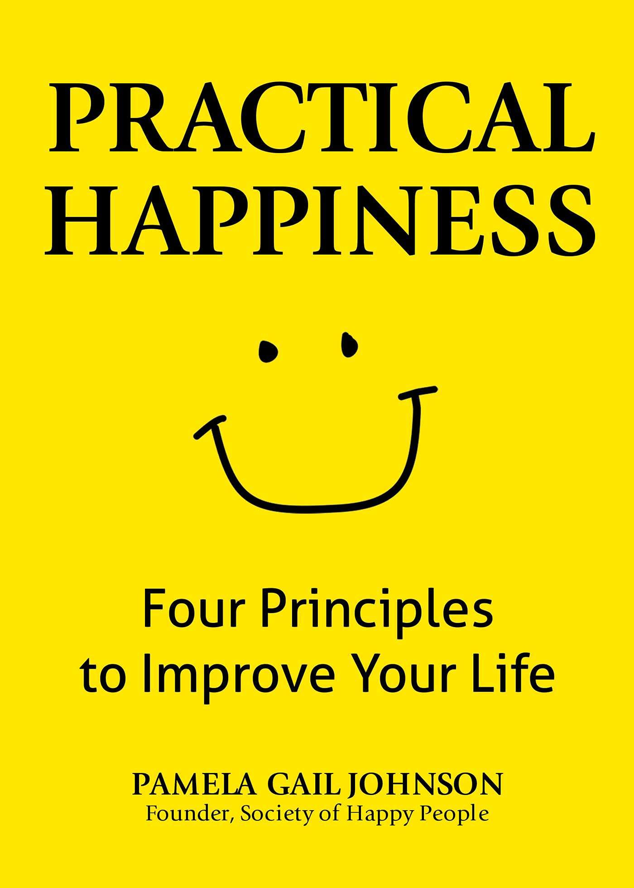

Books


People
- Mel Robbins - The Let Them Theory
- My parents - For always pushing me to do and be my best
- The kids I surround myself with - To see childlike joy in myself
Check out this video that highlights the importance of childlike joy!
Hobbies
Finding hobbies really helped me find peace in being alone and loving myself
- Felting
- Ceramics
- Biking
- Wakeboarding
- Embroidery